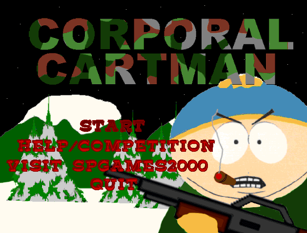
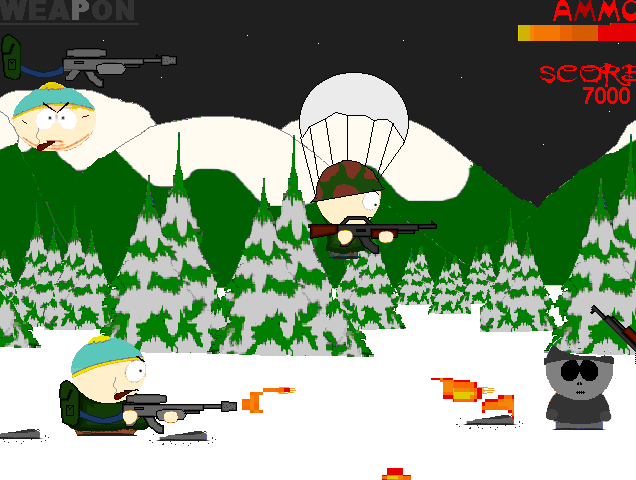
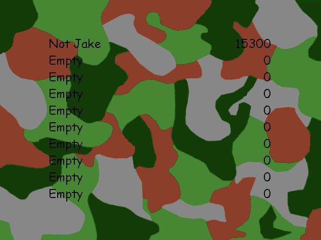

Corporal Cartman
Subwoofer
A small project from Subwoofer released as a contest game in 2000. In it, you play as Cartman, who is confined to a little warzone. As enemies run (and parachute) in and more tanks come towards you, you must rack up as many points as possible by essentially laying waste to everything in the level, collecting bigger guns, and fighting for the highest score possible. Some very nice ideas, though unfortunately, the game is hampered by a jerky engine and annoying bugs, all of which could've been avoided if the game wasn't so rushed. Quite a shame, though worth a look.
Downloads Direct Download - 1.57 MB Internet Archive Link2024 South Park Gaming